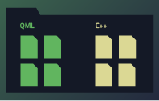

Qt Creator Manual
Qt Creator provides a cross-platform, complete integrated development environment (IDE) for application developers to create applications for multiple desktop, embedded, and mobile device platforms, such as Android and iOS. It is available for Linux, macOS and Windows operating systems. For more information, see Supported Platforms.
In addition, you can use the experimental WebAssembly plugin to build applications in web format and run them in web browsers.
This manual also describes features that are only available if you have the appropriate Qt license. For more information, see Commercial Features.
| All Topics | |||
|  |  |  | |
| Getting Started | Managing Projects | Designing User Interfaces | Coding |
 |  |  | |
| Building and Running | Testing | Advanced Use | Getting Help |
Contact Us
| |||